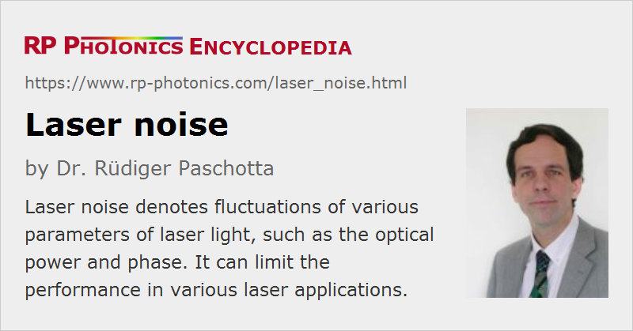

Laser Noise
Definition: fluctuations of various parameters of laser light, such as the optical power and phase
More specific terms: intensity noise, phase noise, timing jitter
German: Laserrauschen
Categories: lasers, fluctuations and noise
How to cite the article; suggest additional literature
Author: Dr. Rüdiger Paschotta
Due to various influences of quantum noise and fluctuations of various technical origins, the output of a laser always contains some noise. There are different kinds of laser noise:
- In a single-frequency laser, there are intensity noise (or amplitude noise) and phase noise. The latter causes a finite laser linewidth, and is strongly related to frequency noise. It also limits the temporal coherence.
- In a laser operating on multiple resonator modes, there is usually stronger intensity noise due to mode beating noise and also mode partition noise, i.e., fluctuations of the power distribution over the resonator modes. The optical power in one of these modes may fluctuate much more than the total power.
- A mode-locked laser exhibits additional types of noise – for example, noise in the temporal position of the pulses (→ timing jitter), noise in the center frequency, pulse duration, and chirp. For harmonic mode locking, there is also so-called supermode noise.
- Any laser can exhibit beam pointing fluctuations.
Origins of Laser Noise
The origins of laser noise can be divided into two groups:
- quantum noise, in particular associated with spontaneous emission in the gain medium
- technical noise, arising e.g. from excess noise of the pump source, from vibrations of the laser resonator, or from temperature fluctuations
Impacts of Laser Noise
Laser noise is important for many laser applications. Some examples are:
- High precision optical measurements, e.g. in frequency metrology, precision laser spectroscopy or interferometry, require low intensity and phase noise.
- The data transmission rates achievable with optical fiber communications systems are usually limited by noise of lasers and amplifiers.
- For precise laser material processing, it is often necessary that beam pointing fluctuations and pulse energy variations are minimized.
Methods for Noise Reduction
Laser noise can be reduced in many ways:
- Quantum noise can be reduced e.g. by increasing the intracavity power level and by minimizing optical losses.
- Technical noise influences can be reduced, e.g. by building a stable laser resonator, by temperature stabilization of the setup, or by using a low-noise pump source.
- Laser parameters can be optimized so that the laser reacts less strongly to certain noise influences.
- Mode hopping may be suppressed, e.g. with an optical filter.
- There are various active or passive techniques for the stabilization of lasers.
A prerequisite for effective noise reduction is that the origin of the most disturbing noise is known, in addition to the parameters determining the laser's sensitivity to thus noise influences. Depending on the case, it can be more effective to reduce either noise influences themselves or the laser's sensitivity.
Suppliers
The RP Photonics Buyer's Guide contains 5 suppliers for laser noise measurement equipment.
Questions and Comments from Users
Here you can submit questions and comments. As far as they get accepted by the author, they will appear above this paragraph together with the author’s answer. The author will decide on acceptance based on certain criteria. Essentially, the issue must be of sufficiently broad interest.
Please do not enter personal data here; we would otherwise delete it soon. (See also our privacy declaration.) If you wish to receive personal feedback or consultancy from the author, please contact him e.g. via e-mail.
By submitting the information, you give your consent to the potential publication of your inputs on our website according to our rules. (If you later retract your consent, we will delete those inputs.) As your inputs are first reviewed by the author, they may be published with some delay.
Bibliography
| [1] | A. L. Schawlow and C. H. Townes, “Infrared and optical masers”, Phys. Rev. 112 (6), 1940 (1958), doi:10.1103/PhysRev.112.1940 (ground-breaking work; also contains the famous Schawlow–Townes equation) |
| [2] | C. C. Harb et al., “Intensity-noise dependence of Nd:YAG lasers on their diode-laser pump source”, J. Opt. Soc. Am. B 14 (11), 2936 (1997), doi:10.1364/JOSAB.14.002936 |
| [3] | B. C. Buchler et al., “Feedback control of laser intensity noise”, Phys. Rev. A 57 (2), 1286 (1998), doi:10.1103/PhysRevA.57.1286 |
| [4] | T. C. Ralph et al., “Understanding and controlling laser intensity noise”, Opt. Quantum Electron. 31, 583 (1999), doi:10.1023/A:1006943801659 |
| [5] | R. Paschotta, “Noise of mode-locked lasers. Part I: numerical model”, Appl. Phys. B 79, 153 (2004); R. Paschotta, “Noise of mode-locked lasers. Part II: timing jitter and other fluctuations”, Appl. Phys. B 79, 163 (2004), doi:10.1007/s00340-004-1548-9 |
| [6] | R. Paschotta et al., “Optical phase noise and carrier–envelope offset noise of mode-locked lasers”, Appl. Phys. B 82 (2), 265 (2006), doi:10.1007/s00340-005-2041-9 |
| [7] | R. Paschotta, H. R. Telle, and U. Keller, “Noise of Solid State Lasers”, in Solid-State Lasers and Applications (ed. A. Sennaroglu), CRC Press, Boca Raton, FL (2007), Chapter 12, pp. 473–510 |
| [8] | R. Paschotta, “Noise in Laser Technology”. Part 1 – Intensity and Phase Noise; Part 2: Fluctuations in Pulsed Lasers; Part 3: Beam Pointing Fluctuations |
See also: noise specifications, laser specifications, quantum noise, shot noise, intensity noise, phase noise, linewidth, Schawlow–Townes linewidth, amplifier noise, coherence, stabilization of lasers, mode hopping, The Photonics Spotlight 2006-08-01, The Photonics Spotlight 2006-08-20, The Photonics Spotlight 2006-10-09
and other articles in the categories lasers, fluctuations and noise
|  |
If you like this page, please share the link with your friends and colleagues, e.g. via social media:
These sharing buttons are implemented in a privacy-friendly way!